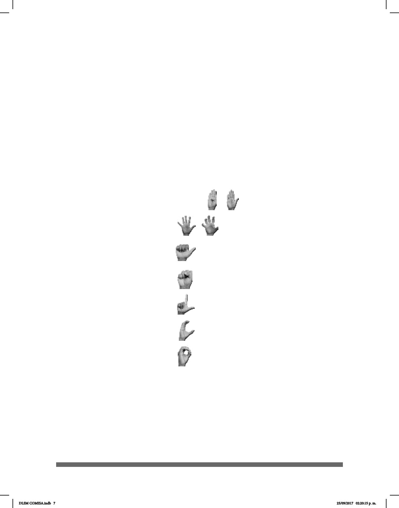

7
3.3. Orientación de la palma de la mano................................................................... 83
3.4. Ubicación........................................................................................................... 86
3.5. Dirección del Movimiento de la Mano................................................................ 89
3.6. Explicación de los movimientos y sus símbolos................................................ 95
3.7. Rasgos no Manuales: Expresión Facial y Gestos.............................................. 94
Parte IV. Guía de Uso del DLSM
4.1. Estructura lexicográca...................................................................................... 98
4.2. Sobre las Conguraciones Manuales del DLSM ............................................. 105
Conguración Manual “B-PALMA” ......................................... 110
Conguración “5-GARRA” ...................................................... 192
Conguración Manual “A” ................................................................. 233
Conguración Manual “S” ................................................................. 293
Conguración Manual “L” ................................................................. 340
Conguración Manual “C” ................................................................ 395
Conguración Manual “O” .................................................................. 427
Apéndices
1. Convenios de Transcripción: Símbolos Utilizados para Escribir en LSM............. 457
2. Lista de Abreviaturas............................................................................................ 461
3. Dactilología (Denición y Uso)............................................................................. 467
DLSM COMISA.indb 7 25/09/2017 02:20:15 p. m.